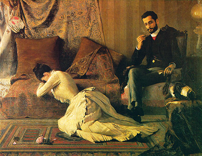

28
TEXTO I
ALMEIDA, Belmiro de. Arrufos (1887). Disponível em: http://enciclopedia.itaucultural.org.br/obra6374/arrufos.
Acesso em: 28 maio 2020
TEXTO II
O PRIMO BASÍLIO
[...]
Enfim, um dia que o viu mais distraído, mais frio, explicou-se abertamente com ele.
Direita, sentada no canapé de palhinha, falou com bom senso, devagar, com um ar digno e preparado: Que percebia bem que ele se aborrecia; que o seu grande amor tinha passado; que era portanto humilhante para ela verem-se nessas condições, e que julgava mais digno acabarem...
Basílio olhava-a, surpreendido da sua solenidade; sentia um estudo, uma afetação naquelas frases; disse muito tranqüilamente, sorrindo:
— Trazias isso decorado!
Luísa ergueu-se bruscamente; encarou-o, teve um movimento desdenhoso dos lábios.
— Tu estás doida, Luísa?
— Estou farta. Faço todos os sacrifícios por ti; venho aqui todos os dias; comprometo-me, e para quê? Para te ver muito indiferente, muito secado...
— Mas meu amor...
Ela teve um sorriso de escárnio.
— Meu amor! Oh! São ridículos esses fingimentos!
Basílio impacientou-se.
— Já isso cá me faltava, essa cena! — exclamou impetuosamente. E cruzando os braços diante dela:
— Mas que queres tu? Queres que te ame como no teatro, em São Carlos? Todas sois assim!
Quando um pobre diabo ama naturalmente, como todo o mundo, com o seu coração, mas não tem gestos de tenor, aqui del rei que é frio, que se aborrece, é ingrato... Mas que queres tu? Queres que me atire de joelhos, que declame, que revire os olhos, que faça juras, outras tolices?
— São tolices que tu fazias...
— Ao princípio! — respondeu ele brutalmente. — Já nos conhecemos muito para isso, minha rica.
E havia apenas cinco semanas!
[...]
QUEIRÓS, E. de. O primo Basílio (1878). Ciberfil Literatura Digital. Disponível em: http://www.dominiopublico.gov.br/download/texto/ph000227.pdf. Acesso em: 28 maio 2020. p. 156-157 (adaptado).
Considerando o movimento Realista, a prática docente e uma análise comparativa entre a imagem e o texto escrito apresentados, avalie as afirmações a seguir.
I. O professor pode explicitar que entre 1850 e 1890 o Realismo espalhou-se pela Europa e outros continentes tanto nas artes visuais quanto na literatura.
II. O professor pode relacionar a pintura Arrufos, que retrata a discussão de um casal, e o trecho de O Primo Basílio, a fim de retratar em diferentes expressões artísticas a representação objetiva da realidade, ou seja, uma forma de reproduzir a realidade tal como ela é.
III. O professor pode relacionar Arrufos, uma das primeiras obras brasileiras a romper com a tradição de pinturas históricas e de imagens sagradas e O Primo Basílio, um romance de crítica da sociedade portuguesa cujas falsas bases Eça de Queirós considerava um dever atacar.
IV. O professor pode expor que as obras e os autores atacam as instituições sociais como a Família, a Igreja e o Estado, sempre com a preocupação de fazer um vasto inquérito da sociedade brasileira e portuguesa, e moralizar os costumes da época.
É correto apenas o que se afirma em